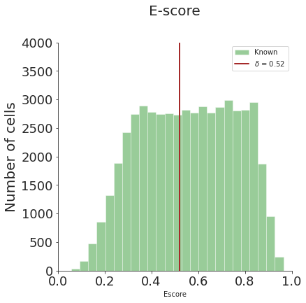
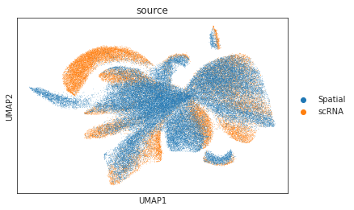
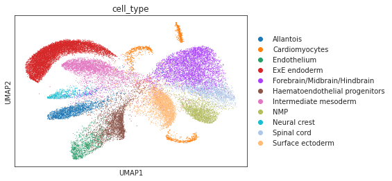
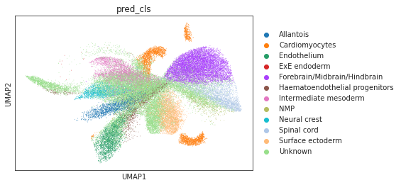
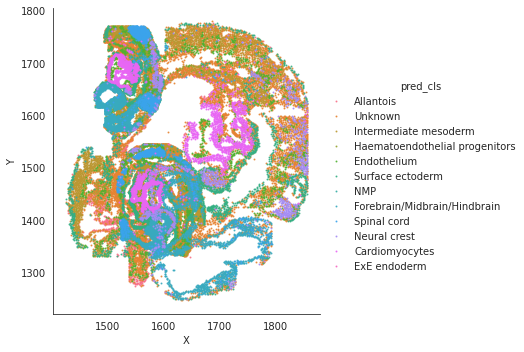

[1]:
import torch
import scanpy as sc
import pandas as pd
import numpy as np
# read h5ad rna/seqfish data
device = torch.device('cuda:2')
adata_rna = sc.read_h5ad('/data/msyuan/Cross-omics-Annotator/SPANN_Package/sample_data/adata_rna.h5ad')
adata_seqfish = sc.read_h5ad('/data/msyuan/Cross-omics-Annotator/SPANN_Package/sample_data/adata_seqfish_40.h5ad')
# the original data has cell type information
adata_seqfish.obs = adata_seqfish.obs.drop('cell_type', axis=1)
[2]:
# preprocess to get torch datasets and dataloaders
from preprocess import *
adata_cm, adata_spa, adata_rna = anndata_preprocess(adata_seqfish, adata_rna, spatial_labels=False)
source_sp_ds,target_sp_ds,source_cm_dl,target_cm_dl,test_source_cm_dl,test_target_cm_dl = generate_dataloaders(adata_cm,adata_spa,adata_rna)
/data/msyuan/anaconda3/lib/python3.7/site-packages/anndata/_core/anndata.py:1785: FutureWarning: X.dtype being converted to np.float32 from float64. In the next version of anndata (0.9) conversion will not be automatic. Pass dtype explicitly to avoid this warning. Pass `AnnData(X, dtype=X.dtype, ...)` to get the future behavour.
[AnnData(sparse.csr_matrix(a.shape), obs=a.obs) for a in all_adatas],
/data/msyuan/Cross-omics-Annotator/SPANN_Package/preprocess.py:68: SettingWithCopyWarning:
A value is trying to be set on a copy of a slice from a DataFrame
See the caveats in the documentation: https://pandas.pydata.org/pandas-docs/stable/user_guide/indexing.html#returning-a-view-versus-a-copy
adata_cm.obs["labels"][adata_cm.obs["domain_id"]=='1'] = -1
rna_labels: [ 0 1 2 3 4 5 6 7 8 9 10]
[3]:
# contruct SPANN model
from model import *
enc,dec,x_dim,z_dim = generate_ae_params(adata_cm, adata_spa, adata_rna)
spann = SPANN_model(x_dim, z_dim, enc, dec, class_num=len(adata_rna.obs['cell_type'].unique()), device=device)
[easydl] tensorflow not available!
[4]:
# train SPANN model without validation
source_sp_ds,target_sp_ds,source_cm_dl,target_cm_dl,\
test_source_cm_dl,test_target_cm_dl = generate_dataloaders(adata_cm,adata_spa,adata_rna,batch_size=256)
adata_source, adata_target, threshold_test = spann.train(source_cm_dl,target_cm_dl,source_sp_ds,target_sp_ds,adata_spa.obs[["X","Y"]],
test_source_cm_dl, test_target_cm_dl,np.array(adata_rna.obs['labels']),np.unique(adata_rna.obs['cell_type']),
lr=2e-4,resolution=0.5,lambda_spa=0.001,lambda_cd=0.001,lambda_nb=10,
maxiter=5000,miditer1=2000,miditer2=4000,miditer3=4000)
#Iter 100: Reconstruction loss: 2.243307, KL loss: 99.192215, CLS loss: 1.650479, Spatial loss: 0.000000, CCD loss: 0.000000, Neighbor loss: 0.000000
#Iter 200: Reconstruction loss: 2.166400, KL loss: 129.111908, CLS loss: 1.486549, Spatial loss: 0.000000, CCD loss: 0.000000, Neighbor loss: 0.000000
#Iter 300: Reconstruction loss: 2.134961, KL loss: 85.156876, CLS loss: 1.276017, Spatial loss: 0.000000, CCD loss: 0.000000, Neighbor loss: 0.000000
#Iter 400: Reconstruction loss: 2.098627, KL loss: 87.590103, CLS loss: 1.202821, Spatial loss: 0.000000, CCD loss: 0.000000, Neighbor loss: 0.000000
#Iter 500: Reconstruction loss: 2.072297, KL loss: 74.694458, CLS loss: 1.010152, Spatial loss: 0.000000, CCD loss: 0.000000, Neighbor loss: 0.000000
#Iter 600: Reconstruction loss: 2.039676, KL loss: 72.406609, CLS loss: 0.963126, Spatial loss: 0.000000, CCD loss: 0.000000, Neighbor loss: 0.000000
#Iter 700: Reconstruction loss: 2.001389, KL loss: 87.180473, CLS loss: 0.875432, Spatial loss: 0.000000, CCD loss: 0.000000, Neighbor loss: 0.000000
#Iter 800: Reconstruction loss: 1.967878, KL loss: 79.031860, CLS loss: 0.822606, Spatial loss: 0.000000, CCD loss: 0.000000, Neighbor loss: 0.000000
#Iter 900: Reconstruction loss: 1.956452, KL loss: 71.455574, CLS loss: 0.811231, Spatial loss: 0.000000, CCD loss: 0.000000, Neighbor loss: 0.000000
#Iter 1000: Reconstruction loss: 1.925262, KL loss: 68.426918, CLS loss: 0.810287, Spatial loss: 0.000000, CCD loss: 0.000000, Neighbor loss: 0.000000
#Iter 1100: Reconstruction loss: 1.891046, KL loss: 73.906616, CLS loss: 0.767314, Spatial loss: 0.000000, CCD loss: 0.000000, Neighbor loss: 0.000000
#Iter 1200: Reconstruction loss: 1.883351, KL loss: 72.191177, CLS loss: 0.779271, Spatial loss: 0.000000, CCD loss: 0.000000, Neighbor loss: 0.000000
#Iter 1300: Reconstruction loss: 1.837919, KL loss: 71.268295, CLS loss: 0.757656, Spatial loss: 0.000000, CCD loss: 0.000000, Neighbor loss: 0.000000
#Iter 1400: Reconstruction loss: 1.822573, KL loss: 61.659828, CLS loss: 0.761432, Spatial loss: 0.000000, CCD loss: 0.000000, Neighbor loss: 0.000000
#Iter 1500: Reconstruction loss: 1.792225, KL loss: 75.016464, CLS loss: 0.726153, Spatial loss: 0.000000, CCD loss: 0.000000, Neighbor loss: 0.000000
#Iter 1600: Reconstruction loss: 1.766414, KL loss: 70.794441, CLS loss: 0.684306, Spatial loss: 0.000000, CCD loss: 0.000000, Neighbor loss: 0.000000
#Iter 1700: Reconstruction loss: 1.743973, KL loss: 62.976913, CLS loss: 0.764387, Spatial loss: 0.000000, CCD loss: 0.000000, Neighbor loss: 0.000000
#Iter 1800: Reconstruction loss: 1.714468, KL loss: 67.446396, CLS loss: 0.683701, Spatial loss: 0.000000, CCD loss: 0.000000, Neighbor loss: 0.000000
#Iter 1900: Reconstruction loss: 1.699200, KL loss: 70.562225, CLS loss: 0.677719, Spatial loss: 0.000000, CCD loss: 0.000000, Neighbor loss: 0.000000
#Iter 2000: Reconstruction loss: 1.674884, KL loss: 53.296318, CLS loss: 0.691501, Spatial loss: 0.000000, CCD loss: 0.000000, Neighbor loss: 0.000000
bimodality of dip test: 0.0 True
bimodality coefficient:(>0.555 indicates bimodality) 0.46228265367831095 False
ood sample exists: True
#Iter 2100: Reconstruction loss: 1.655199, KL loss: 51.320908, CLS loss: 0.692178, Spatial loss: 0.000000, CCD loss: 0.154241, Neighbor loss: 0.000000
#Iter 2200: Reconstruction loss: 1.633668, KL loss: 52.612015, CLS loss: 0.673292, Spatial loss: 0.000000, CCD loss: 0.152371, Neighbor loss: 0.000000
#Iter 2300: Reconstruction loss: 1.604546, KL loss: 55.981277, CLS loss: 0.692332, Spatial loss: 0.000000, CCD loss: 0.160147, Neighbor loss: 0.000000
#Iter 2400: Reconstruction loss: 1.586772, KL loss: 50.015575, CLS loss: 0.716590, Spatial loss: 0.000000, CCD loss: 0.174053, Neighbor loss: 0.000000
#Iter 2500: Reconstruction loss: 1.574624, KL loss: 47.568970, CLS loss: 0.680545, Spatial loss: 0.000000, CCD loss: 0.167082, Neighbor loss: 0.000000
#Iter 2600: Reconstruction loss: 1.542749, KL loss: 48.152237, CLS loss: 0.651239, Spatial loss: 0.000000, CCD loss: 0.192366, Neighbor loss: 0.000000
#Iter 2700: Reconstruction loss: 1.525012, KL loss: 48.414207, CLS loss: 0.681702, Spatial loss: 0.000000, CCD loss: 0.196193, Neighbor loss: 0.000000
#Iter 2800: Reconstruction loss: 1.507910, KL loss: 44.849693, CLS loss: 0.675833, Spatial loss: 0.000000, CCD loss: 0.185839, Neighbor loss: 0.000000
#Iter 2900: Reconstruction loss: 1.484686, KL loss: 47.839211, CLS loss: 0.639085, Spatial loss: 0.000000, CCD loss: 0.161256, Neighbor loss: 0.000000
#Iter 3000: Reconstruction loss: 1.463079, KL loss: 45.775978, CLS loss: 0.637189, Spatial loss: 0.000000, CCD loss: 0.187220, Neighbor loss: 0.000000
#Iter 3100: Reconstruction loss: 1.448479, KL loss: 44.424080, CLS loss: 0.676758, Spatial loss: 0.000000, CCD loss: 0.156760, Neighbor loss: 0.000000
#Iter 3200: Reconstruction loss: 1.429083, KL loss: 44.934151, CLS loss: 0.665666, Spatial loss: 0.000000, CCD loss: 0.194844, Neighbor loss: 0.000000
#Iter 3300: Reconstruction loss: 1.409750, KL loss: 43.566780, CLS loss: 0.635228, Spatial loss: 0.000000, CCD loss: 0.176762, Neighbor loss: 0.000000
#Iter 3400: Reconstruction loss: 1.393285, KL loss: 43.252029, CLS loss: 0.658095, Spatial loss: 0.000000, CCD loss: 0.150202, Neighbor loss: 0.000000
#Iter 3500: Reconstruction loss: 1.374356, KL loss: 42.386517, CLS loss: 0.657583, Spatial loss: 0.000000, CCD loss: 0.188383, Neighbor loss: 0.000000
#Iter 3600: Reconstruction loss: 1.357847, KL loss: 41.392021, CLS loss: 0.684353, Spatial loss: 0.000000, CCD loss: 0.203441, Neighbor loss: 0.000000
#Iter 3700: Reconstruction loss: 1.340388, KL loss: 41.309738, CLS loss: 0.640194, Spatial loss: 0.000000, CCD loss: 0.172108, Neighbor loss: 0.000000
#Iter 3800: Reconstruction loss: 1.325923, KL loss: 40.485649, CLS loss: 0.673848, Spatial loss: 0.000000, CCD loss: 0.206285, Neighbor loss: 0.000000
#Iter 3900: Reconstruction loss: 1.308262, KL loss: 39.828285, CLS loss: 0.652403, Spatial loss: 0.000000, CCD loss: 0.156316, Neighbor loss: 0.000000
#Iter 4000: Reconstruction loss: 1.294008, KL loss: 38.733986, CLS loss: 0.642383, Spatial loss: 0.000000, CCD loss: 0.173009, Neighbor loss: 0.000000
#Iter 4100: Reconstruction loss: 1.277607, KL loss: 38.744164, CLS loss: 0.667137, Spatial loss: 0.080485, CCD loss: 0.159806, Neighbor loss: 0.010372
#Iter 4200: Reconstruction loss: 1.266890, KL loss: 38.003601, CLS loss: 0.684546, Spatial loss: 0.083020, CCD loss: 0.204483, Neighbor loss: 0.008979
#Iter 4300: Reconstruction loss: 1.249560, KL loss: 37.107880, CLS loss: 0.642747, Spatial loss: 0.081885, CCD loss: 0.131490, Neighbor loss: 0.008199
#Iter 4400: Reconstruction loss: 1.234681, KL loss: 36.372559, CLS loss: 0.622374, Spatial loss: 0.080230, CCD loss: 0.156410, Neighbor loss: 0.009692
#Iter 4500: Reconstruction loss: 1.222244, KL loss: 36.029549, CLS loss: 0.692019, Spatial loss: 0.090740, CCD loss: 0.174686, Neighbor loss: 0.008499
#Iter 4600: Reconstruction loss: 1.210039, KL loss: 35.358047, CLS loss: 0.635472, Spatial loss: 0.092441, CCD loss: 0.144400, Neighbor loss: 0.007834
#Iter 4700: Reconstruction loss: 1.193886, KL loss: 35.613060, CLS loss: 0.628861, Spatial loss: 0.086617, CCD loss: 0.157079, Neighbor loss: 0.008221
#Iter 4800: Reconstruction loss: 1.183631, KL loss: 34.358025, CLS loss: 0.667877, Spatial loss: 0.095177, CCD loss: 0.160533, Neighbor loss: 0.008850
#Iter 4900: Reconstruction loss: 1.170104, KL loss: 34.040646, CLS loss: 0.646944, Spatial loss: 0.088315, CCD loss: 0.155162, Neighbor loss: 0.007485
#Iter 5000: Reconstruction loss: 1.155968, KL loss: 33.821548, CLS loss: 0.648810, Spatial loss: 0.089221, CCD loss: 0.172562, Neighbor loss: 0.008848
#Iter 5100: Reconstruction loss: 1.146963, KL loss: 33.721298, CLS loss: 0.660845, Spatial loss: 0.091244, CCD loss: 0.159615, Neighbor loss: 0.008255
[5]:
# distribution plot
from functions import *
dist_fig = distribution_plot(adata_target.obs['Escore'], threshold_test, bins=25, ylim=4000)
WARNING:matplotlib.font_manager:findfont: Font family ['Arial'] not found. Falling back to DejaVu Sans.

[7]:
# umap visualizations
# umap plot colored by source and cell types
adata_total = sc.AnnData.concatenate(adata_source, adata_target)
sc.pp.neighbors(adata_total, use_rep="X")
sc.tl.umap(adata_total)
sc.pl.umap(adata_total, color="source", show=True)
sc.pl.umap(adata_total[adata_total.obs['source']=='scRNA'], color="cell_type", show=True)
sc.pl.umap(adata_total[adata_total.obs['source']=='Spatial'], color="pred_cls", show=True)



[8]:
# spatial plot
import seaborn as sns
sns.lmplot(data=adata_target.obs, x='X', y='Y',hue='pred_cls',fit_reg=False, legend=True, legend_out=True, scatter_kws={"s": 1})
[8]:
<seaborn.axisgrid.FacetGrid at 0x7fb98c115950>

[ ]: